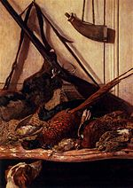
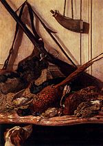
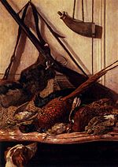
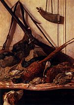
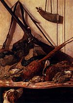

Claude Monet
Obras
Artista
Contacto
Obras Populares
Etapa temprana (1858-1872)
Impresionismo y etapa media (1872-1902)
1884 (Bordighera, Italy)
1884-1888 (Giverny)
1888 (Antibes)
1888-1898 (Giverny (continued))
1899-1904 (Londres)
1900-1926 (Giverny (continued))

 




_-_Google_Art_Project.jpg)